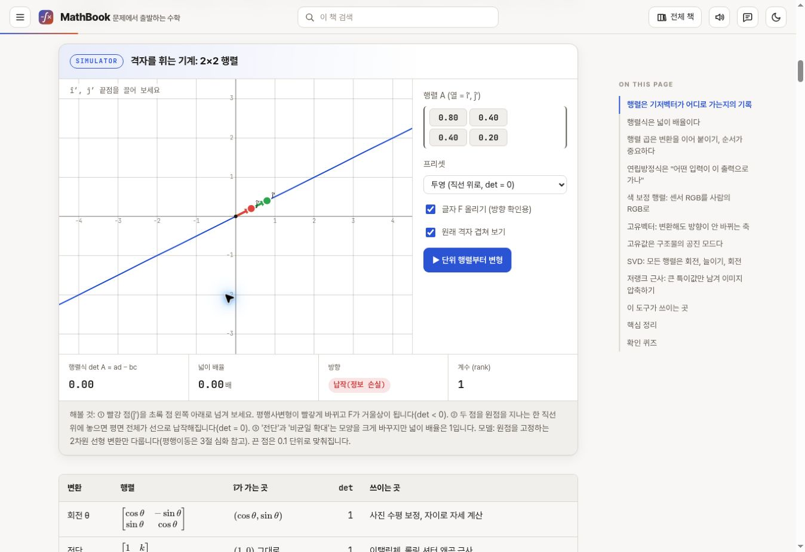

질문에서 시작하는 학습
읽고, 실험하고,
이해를 쌓는 서재.
흩어진 지식을 하나의 이야기로 잇습니다.
직접 해보며 배운 내용을 다음 질문으로 이어갑니다.
서재의 출발점
학습 콘텐츠는
어떻게 이어지는가

32권의 구성과 학습 경험을 살펴본 분석
서재를 여는 자료
지금 펼쳐볼 자료
콘텐츠를 살펴본 기록부터, 함께 집필하기 위한 기준까지.
분석 리포트
학습 콘텐츠를 연결하는 방법
32권의 교과서에서 페이지 연결, 스토리텔링, 시각화와 실험의 원칙을 살펴봅니다.
책별 관찰32권에서 찾은 집필의 힌트
센서, 반도체, AI, 수학. 각 책이 어떤 질문과 사례로 개념을 풀어 가는지 비교합니다.
조사 원자료648개 페이지를 따라가다
조사한 주소와 구조, 확인 범위를 검색하고 원문 페이지로 이동할 수 있습니다.
운영 기준한 장을 완성하는 기준
문제에서 출발해 예측, 조작, 관찰, 설명과 새 문제로 이어지는 집필 흐름을 정합니다.
공동 작업Codex와 Claude가 함께 쓰는 법
공통 지침과 작업 기록, 검증과 인계 방식으로 두 도구가 같은 맥락에서 작업합니다.
책 기획서새 책의 첫 질문 정하기
누구를 위한 책인지, 어떤 사례를 따라가고 무엇을 할 수 있게 될지 정리합니다.
장·실험 기획서하나의 실험을 설계하기
질문과 입력값, 모델, 결과와 한계를 구현 전에 확인하는 기획서입니다.
일치하는 자료가 없습니다.
검색어를 줄이거나 다른 분류를 선택해 보세요.
하나의 질문, 한 권의 책
학습 책
각 책은 독립적으로 자라고, 이 서재에서 서로 이어집니다.
첫 번째 책을 준비하는 자리입니다.
아직 등록된 학습 책이 없습니다. 주제와 독자, 첫 장의 질문을 정하면 이곳에서 책을 펼칠 수 있습니다.
- 01
하나의 사례를 끝까지 따라가기
새로운 개념은 앞에서 만난 문제를 풀며 등장합니다. 장이 바뀌어도 질문의 맥락을 이어갑니다.
- 02
먼저 예상하고, 직접 확인하기
값을 바꾸기 전에 결과를 예상합니다. 설명과 시각화, 작은 실험으로 생각을 점검합니다.
- 03
답에서 다음 질문으로 나아가기
배운 내용을 새로운 상황에 적용합니다. 남은 질문은 다음 장과 다른 책으로 연결합니다.